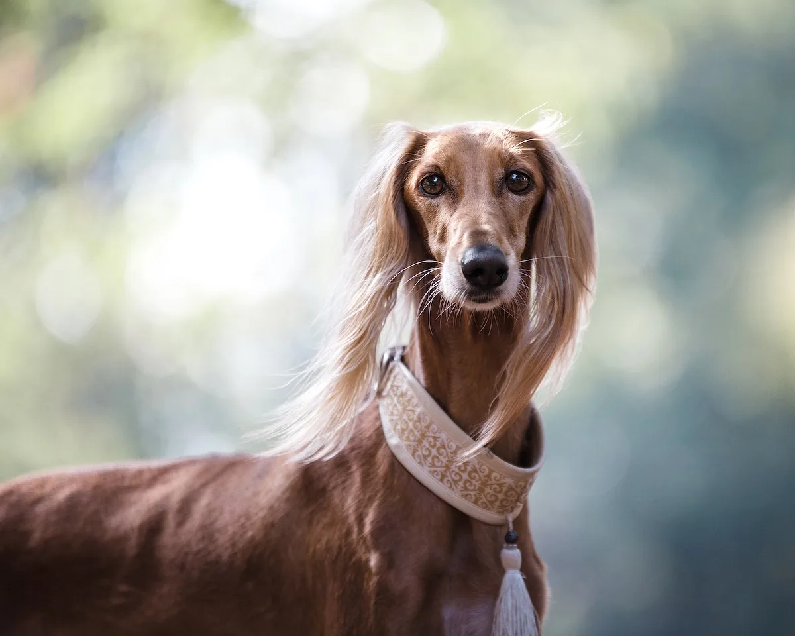
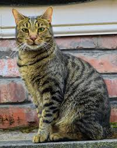
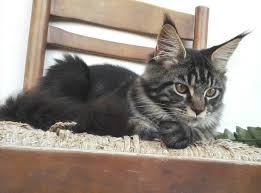
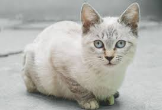

A SOS Vida Animal é uma Organização da Sociedade Civil de Interesse Público (OSCIP), fundada em Londrina em 1989. Desde sua criação, a SOS Vida Animal desenvolve um trabalho pró-ativo de proteção dos direitos dos animais. Suas ações são divididas em quatro campos de atuação: Atendimento às denúncias de maus tratos; Castração; Desenvolvimento de ações e projetos de incentivo a educação e a guarda responsável; Socorro a animais abandonados e encaminhamento a lares definitivos.
Oi, eu sou o Pipoca! Um furacão de alegria com orelhas de abano e um sorriso que não para nunca. Cheguei ao abrigo depois de uma vida um pouco complicada, mas nada que o amor não consiga curar. Hoje sou um cachorro super equilibrado: adoro brincar de bola, dar zoomies no quintal e depois deitar com a barriga pra cima pedindo carinho. Sou carinhoso sem ser grudento, brincalhão sem ser destruidor e tenho uma paciência enorme com crianças (já testado e aprovado!). Sou castrado, vacinado, vermifugado e já microchipado. O veterinário diz que tenho saúde de ferro e um coração ainda mais forte. Se você está procurando um cachorro que transforme dias comuns em momentos felizes, vem me conhecer! Prometo abanar o rabo toda vez que você chegar em casa e te dar amor incondicional.💛

Luna
Fêmea, 1 ano e 8 meses | Porte grande
Oi! Eu sou a Luna. Uma cachorrinha alegre, esperta e cheia de amor pra dar! Cheguei ao abrigo bem magrinha e assustada, mas hoje sou outra cachorra: adoro correr, brincar com bolinha, dar pulinhos de felicidade e fazer aquela cara de pidona quando vejo alguém chegando. Sou super sociável, me dou bem com outros cachorros e amo crianças. Quando canso de brincar, viro uma ursinha de pelúcia: deito do seu lado no sofá e fico quietinha recebendo carinho na barriga (meu ponto fraco 😍). Sou castrada, vacinada, vermifugada, microchipada e com ótima saúde. Se você está procurando uma cachorrinha que vai te receber abanando o rabo como se fosse o melhor dia da vida dela todos os dias… então eu sou a escolhida! 💕
Thor
Macho, 5 meses | Porte Pequeno
Oi! Eu sou o Thor 🐶. Um bolinho de pelo fofinho com pernas curtas e uma personalidade gigante! Apesar de ter nome de deus nórdico, sou um cachorrinho pequeno, super peludinho e cheio de charme. Meu pelo é macio, clarinho e sempre bagunçadinho (pareço um ursinho de pelúcia vivo!). Mesmo sendo pequeno, tenho muita energia e adoro dar zoomies pela casa, perseguir bolinhas e fazer acrobacias pra chamar atenção. Quando canso, viro uma bolinha de pelo no seu colo e fico ronronando de tanto carinho. Sou castrado, vacinado, vermifugado, microchipado e tenho saúde de ferro. Se você está procurando um cachorrinho pequeno, peludinho, carinhoso e que te faça sorrir todos os dias, eu sou o Thor! 🧸💛
GATOS

Lua
Fêmea, 1 ano e 6 meses | Porte Médio
Oi, eu sou a Lua 🌙. Uma gatinha linda, curiosa e super carinhosa! Tenho pelagem amarelada com detalhes pretos, olhos grandes e expressivos e um jeitinho doce que conquista todo mundo. Quando cheguei no abrigo era bem tímida, mas hoje em dia já sou a rainha do local. Adoro subir em tudo, explorar caixas, brincar com bolinhas de ping pong e dar cabeçadinhas de carinho. Depois de brincar bastante, viro uma gatinha melosa que ama ficar no colo ou deitada do seu lado ronronando alto. 😸 Sou castrada, vacinada, vermifugada, microchipada e tenho ótima saúde. Se você está procurando uma gatinha carinhosa, divertida, que vai te fazer companhia e encher sua casa de ronronados, eu sou a Lua! 💕

Sombra
Macho, 2 ano | Porte Pequeno
Oi, eu sou o Sombra 🖤. Um gatinho preto azulado, todo arrepiadinho, daqueles que parecem ter levado um choque de fofura! Meu pelo é bem escuro, brilhante e sempre com aquele visual “acordei assim” que me deixa com cara de pequeno rockstar ou cientista maluco. Não se engane pela aparência de “gato sério”: sou super carinhoso, brincalhão e adoro me esfregar nas pernas das pessoas. Quando quero carinho, viro uma bolinha preta ronronante e me jogo no colo sem aviso. Também amo me esconder em lugares apertados e aparecer do nada pra dar sustinho (mas do tipo fofo). Sou castrado, vacinado, vermifugado, microchipado e tenho saúde excelente. Se você está procurando um gatinho preto, misterioso por fora e derretido de amor por dentro, eu sou o Sombra! 🖤✨

Neve
Fêmea, 1 ano e 9 meses | Porte Pequeno
Oi, eu sou a Neve ❄️. Uma gatinha branca como a neve, com pelagem macia, brilhante e super clarinha. Meus olhos são claros (quase azulados/verdes bem clarinhos) e chamam muita atenção — parece que estou sempre te olhando com cara de anjo. Sou calma, elegante e carinhosa. Adoro ficar observando tudo do alto dos móveis, mas também amo descer pra receber carinho e fazer aquele ronronado bem alto. Quando confio na pessoa, viro uma gatinha melosa que gosta de dormir no colo ou pertinho do pescoço. Sou castrada, vacinada, vermifugada, microchipada e tenho ótima saúde. e você sonha com uma gatinha branca, linda, de olhos claros e com um coração doce, eu sou a Neve! ✨❄️